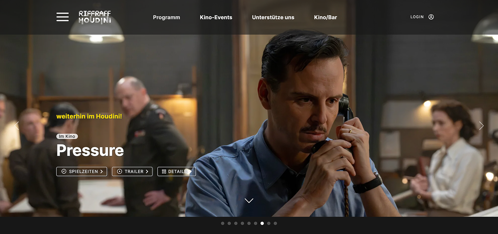
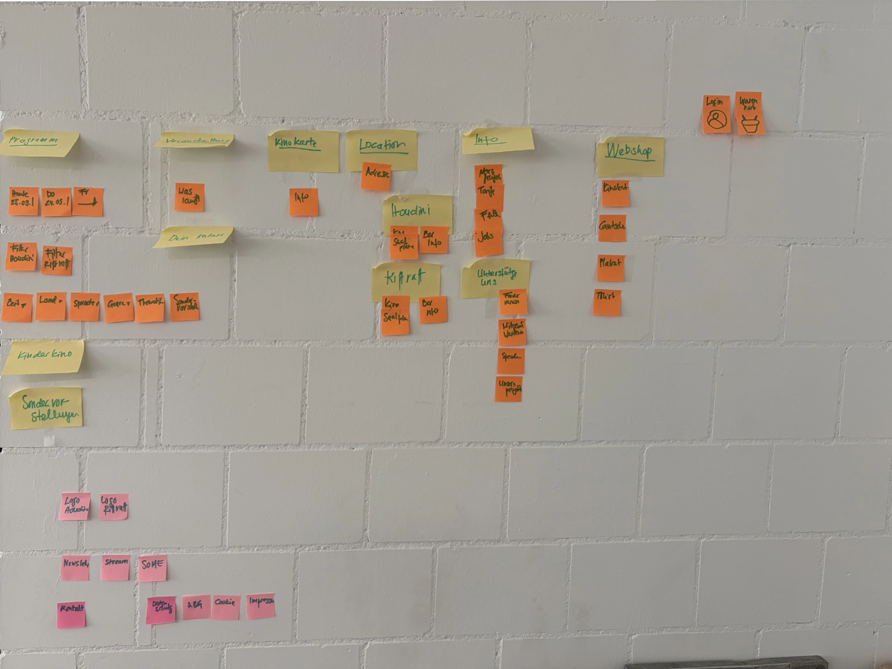
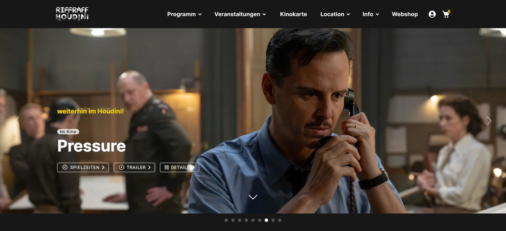
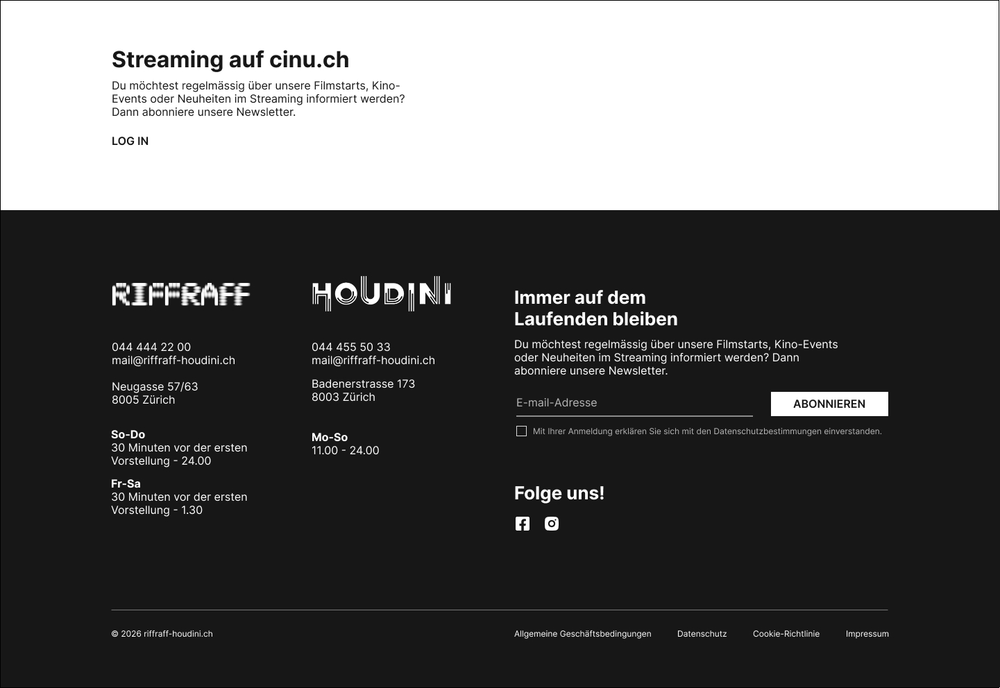
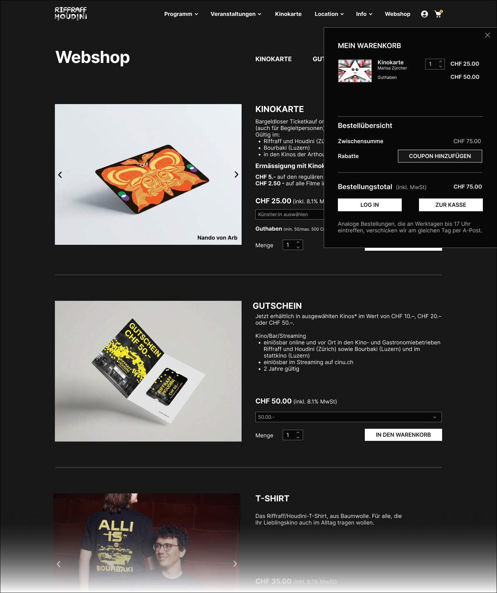

Cinema Riffraff-Houdini

the context
the client
Riffraff/Houdini is an art cinema in Zurich. Its website combines the film programme and online ticketing with events, a cinema card (Kinokarte), a webshop and a link to streaming on cinu.ch. The audience is mainly film lovers from Zurich and the surrounding area who appreciate arthouse films and a good cinema.
visit websitethe goal
As a UX project in the CAS UX/UI at ZHdK, we tested the Riffraff/Houdini website with real users to find out where its key flows cause trouble, and turned the findings into concrete design proposals.
We tested four flows: registering and buying tickets (the main flow), finding a film for inspiration, buying a Kinokarte in the webshop, and booking tickets for a children’s group. We looked especially at navigation, the filter function, how visible the Kinokarte is, and how understandable group booking and seat selection are.
my role
As UX/UI designer, I worked in a team of three with Aurore Bonjour and Brigitte Lampert over two months: one month of conducting interviews, one month of drawing conclusions and redesigning. Within the team I worked on the webshop structure.
• user testing and interview analysis (as a team)
• wireframing
• UI design (in some cases)
• webshop redesign: product order, product thumbnails and cart
Tools: Microsoft Teams (interviews and transcription), Claude (summaries), FigJam (preparation), Figma (UI design)
Deliverables: updated wireframes, and UI designs in some cases
the approach
target audience
Film lovers from Zurich and the surrounding area who appreciate arthouse films and a good cinema.
Secondary: families, groups and companies who want to rent rooms or host events.
We tested with five people aged 25 to 60. They came from different backgrounds: student, architect, vet and teacher.
the problem
We chose four scenarios because they cover the website’s central functions: the main flow is relevant for most age groups, finding a film shows how intuitively users discover films, the Kinokarte is an add-on that could bind customers but isn’t prominent enough, and group booking speaks to a specific audience.
Registration and ticket purchase:
Registration and login felt laborious and unclear, and participants looked for a guest login. Entering a birth date and password was cumbersome, some mandatory fields seemed unnecessary, and after logging in again the originally chosen seats were blocked.
Finding a film
The inspiration approach, the genres and the language of the descriptions worked well. The filters were clearly structured but not complete. The difference between “Veranstaltungen” and “Events” was unclear, and streaming and cinema were presented equally, so it was unclear where a film was available.
Buying a Kinokarte:
Buying a Kinokarte: The terms Gutschein, Kinogutschein and Kinokarte were confusing, and so was “digital vs. analog”. The card was hard to find and the shop’s product order wasn’t understandable, with less relevant products shown first. The cart and checkout were hard to find, there was no feedback after actions, and the choice of credit amounts was limited. Participants said it themselves:
“I’m not sure exactly how I get to the payment process.” (“Weiss ich jetzt nicht genau, wie ich zum Bezahlungsprozess kommen kann.”)
“I’d still need something here so I can add it to the cart, or an OK or something like that.” (“Ich würde hier noch ein irgendetwas brauchen, damit ich zum Warenkorb hinfügen oder ein OK oder so etwas.”)
“A small button saying ‘buy’ would be good too.” (“Also noch ein ein kleines Button mit kaufen wäre gut.”)
“But how you’d give the cinema card as a gift, I still can’t see that.” (“Aber wie man die Kinokarte dann verschenkt, das seh ich da immer noch nicht.”)
Booking for a children’s group (7 children, 1 adult):
There was little orientation in the booking process and no confirmation steps. Seat selection and seat allocation were inflexible and blocked seats were unclear. The process was repetitive, the terms and conditions had to be confirmed several times, and the effort for group bookings was high.
FigJam board

the process
In the first month we ran the user tests as think-aloud interviews, where participants say out loud what they are thinking while using the site. We prepared them in FigJam, ran and transcribed them with Microsoft Teams, and used Claude to summarise them. In the second month we grouped the findings by flow and turned them into design proposals for three areas: navigation, the ticket booking process and the webshop structure. We split these among the team, and I worked on the webshop. We restructured the navigation on a sticky-note wall and built the redesigns as Figma prototypes. We didn’t have time to address every pain point, so we concentrated on the proposals above.

the outcome
Navigation and footer. Before, two separate navigations with duplicate links and no hierarchy made it unclear which menu was for which content. Now less important links sit in dropdown menus, the newsletter has moved to the footer, and streaming on cinu.ch is a stronger call-to-action area.


Webshop and Kinokarte (my part). Before, the card couldn’t be put straight into the cart and the cart was visible only at the top of the page. Now there is an “In den Warenkorb” button, and a slide-in cart appears once an item is added.

Ticket purchase and seat selection. Before, buying without a login was complicated, there was no price overview, seats couldn’t be chosen individually, and discounts had to be confirmed every time. Now login is optional and comes only at the end, with no complicated form. Price categories show on hover and seats can be chosen freely.
The redesigns haven’t been tested with users yet, so they are proposals rather than proven improvements. Webshop prototype